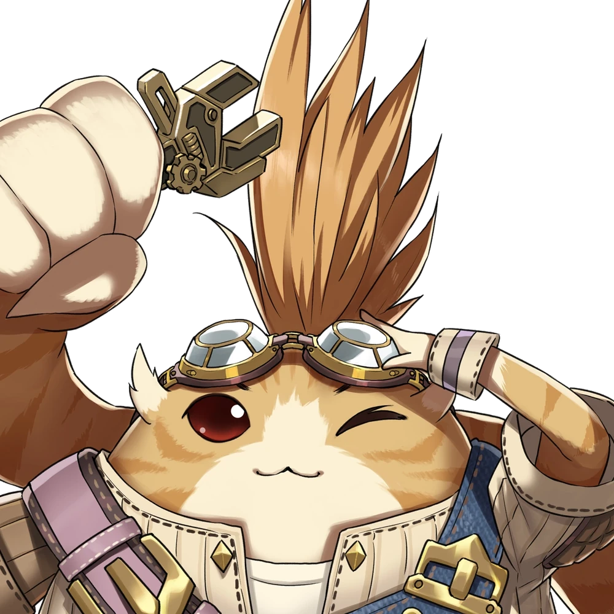

Tora

One of the primary playable characters in Xenoblade Chronicles 2 is Tora. He made the artificial Blade Poppi and is a Nopon. He's the only party member who can employ the many forms of Poppi in battle, even though he's the only one who can't be a Driver. In Chapter 2, Tora joins the group after finishing the primary objectives, Artificial Blade Parts 1 and 2. When he first joins the group, he has a standard Nopon Mask.
Quotes
"Tora will beat them no problem!"
---
"Tora is very handy to have around."
---
"Fighting make Tora toasty-toasty!"